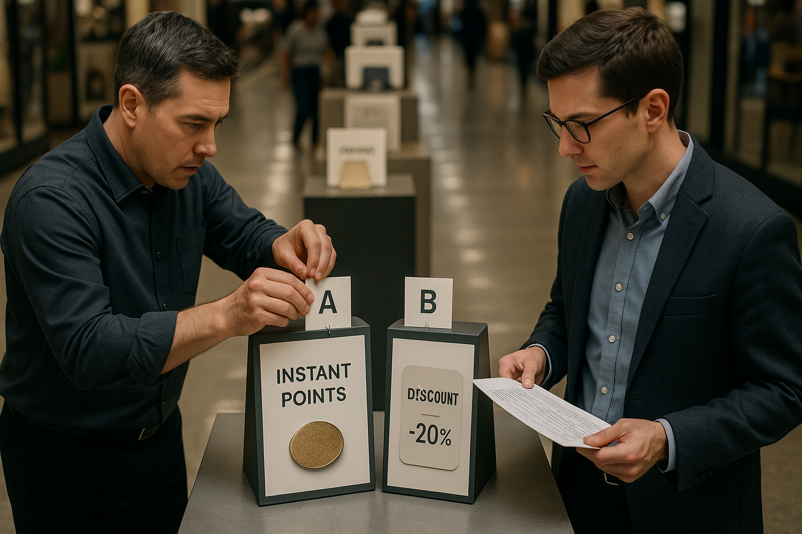

Image generated with OpenAI gpt-image-1
Read This First
Why this window is investable
Run tightly timed early-access and pop‑up activations with a unified holiday target pack — detectable foot‑traffic uplift 10–15% (stretch ≥25% in top markets), early‑window transaction share 20–30% (vs ~12–15% baseline), event CPA ≤0.80× baseline, and QR/scan redemption ≥5% of footfall. Test the offer architecture as an A/B within the same two‑week window (Arm A: legacy percent markdown vs Arm B: bundle + gift‑with‑purchase + instant loyalty credit) to isolate margin and loyalty effects. Over the next 30 days collaboration teams must lock windows and site lists, prepare inventory/bundle and GWP SKUs, instrument door‑counts, QR→POS linkage and A/B assignment IDs, schedule staff/fulfillment, and finalize measurement cohorts for 6–8 week post‑visit followup [^1][^3].
- A/B compare legacy markdown (Arm A) vs bundle+GWP+loyalty (Arm B) inside the same two‑week activation window to protect attribution
- Immediate 30‑day checklist: lock dates/sites, instrument counts/QR→POS, assemble bundles/GWP, and enable A/B flags
Immediate Actions
Move 1
Lock two concentrated activation windows (Black Friday week and Dec 1–14) and assign matched A/B cells with control days
Move 2
Deploy Arm A vs Arm B across matched sites with POS event tagging, door counts, QR codes linked to redemption and loyalty, and defined CPA targets
Move 3
Pre-build bundle and GWP kits, allocate inventory holdback, and train staff/fulfillment to ensure consistent customer experience
Signals to Act On
Market
High‑Value Windows: Black Friday Week + Early–Mid December
Retailers should treat Black Friday week and the first two weeks of December as the primary high‑value acquisition windows for pop‑ups converting to loyalty, supported by payment‑network and holiday‑spend analysis. Mastercard data and holiday strategy coverage show in‑store shopping intent and concentrated wallet share in those periods, with last‑minute and experience‑seeking shoppers clustering before mid‑December.
Run two concentrated pop‑up activation waves — Black Friday week and Dec 1–14 — and A/B test loyalty sign‑up offers (instant point grant vs. discount) to measure sign‑up rate and AOV lift over 8 weeks.
Strength 0.92
US fit 0.98
Sources 7, 3
Behavioral
Discounting Math Shifts Toward Value‑Adds and Cause Messaging
Consumers this season are prioritizing perceived value and socially conscious options over broad percent markdowns, prompting brands to mix or replace straight discounts with gifts, loyalty points or donation messaging. Coverage of holiday ad trends and analysis of constrained holiday spends indicates operators can protect margin by offering experiential or purpose‑linked incentives rather than across‑the‑board price cuts.
Replace one planned sitewide percent markdown in a pop‑up offer with either (a) a donation tied to purchase, (b) a gift‑with‑purchase, or (c) an instant loyalty points bonus and measure AOV, margin and repeat visitation over 6–8 weeks.
Strength 0.90
US fit 0.95
Sources 1, 3
Cultural
Gen Z Drives In‑Store Discovery — Prioritize Social‑First Pop‑Up Design
Gen Z shows high physical shopping intent this holiday season and disproportionately discovers products via social and influencer channels, meaning pop‑ups that are ‘instagrammable’ and social‑optimized convert discovery into loyalty more efficiently. Marketing coverage points to Gen Z’s preference for store experiences and social content as a primary catalyst for footfall and post‑visit engagement.
Design a Gen Z‑targeted pop‑up element (social wall, influencer preview, limited drops) and measure loyalty sign‑up rate among attendees vs. general footfall over the activation period.
Strength 0.90
US fit 0.98
Sources 4, 7
Data Anchors
Gen Z in-store propensity
91–91 % (Gen Z)
Status: observed
Signals: S3
Sources: 7
Headline holiday spend benchmark
500–500 USD per household / shopper (headline)
Status: observed
Signals: S1, S2
Sources: 3
Early-window transaction share (target)
20–30 % of holiday transactions
Status: plan
Signals: S1, S2
Foot-traffic uplift (target)
10–15 % vs baseline week
Status: plan
Signals: S1, S3
Tests & Targets
Event CPA
CPA ≤ 0.80× baseline (track CPA by channel and A/B arm)
Owner Performance marketing
Window 2025-11-13 to 2025-11-20 (primary early window); extend to Black Friday weekend for comparative read)
Owner
Performance marketing
Timeframe
2025-11-13 to 2025-11-20 (primary early window); extend to Black Friday weekend for comparative read)
Notes
Baseline = prior-year campaign CPA or 8-week running average. Also track margin impact: target promo margin hit ≤ 10% relative to baseline margin (plan).
Buyer activity share vs promo intensity
Early-window transactions 20–30% while promo-SKU share ≤ last-year level (measure as % of SKUs or SKUs-in-basket receiving price markdown)
Owner Merchandising + Analytics
Window 2025-11-13 to 2025-11-20 (primary), compare Nov 13–26 and Dec 1–14 as control/stretched windows
Owner
Merchandising + Analytics
Timeframe
2025-11-13 to 2025-11-20 (primary), compare Nov 13–26 and Dec 1–14 as control/stretched windows
Notes
Paired metric requirement: measure 'buyer share' (transactions, AOV, sign-ups) alongside 'promo intensity' (share of units/transactions receiving markdowns or instantaneous discounts). A/B test loyalty incentives (instant points vs % discount vs GWP vs donation) to show 'increase buyers without flooding discounts'. Track AOV, margin %, repeat visitation over 6–8 weeks post-activation.
QR / scan redemption and conversion
QR redemption ≥ 5% of footfall (goal); track QR redemptions → loyalty sign-ups → purchase conversion
Owner CRM + Retail Ops
Window 2025-11-13 to 2025-11-20 (activation week); follow conversion for 8 weeks
Timeframe
2025-11-13 to 2025-11-20 (activation week); follow conversion for 8 weeks
Notes
Pair QR redemption rate with conversion rate (redemption→purchase) and average margin per redeemed order to ensure redemptions drive profitable buyers rather than margin dilution.
Foot-traffic uplift by market (granular)
Detect 10–15% lift vs baseline week; flag top-market stretch ≥25% (use door counts, Wi‑Fi/beacon, or POS-captured visit IDs)
Owner Retail Operations + Local Marketing
Window 2025-11-13 to 2025-11-20 (primary measurement), compare against baseline weeks in Oct and early Nov
Owner
Retail Operations + Local Marketing
Timeframe
2025-11-13 to 2025-11-20 (primary measurement), compare against baseline weeks in Oct and early Nov
Notes
Also record 'buyers per 1,000 visits' to show quality of uplift. High-value windows: early window (Nov 13–20), Black Friday weekend, and Dec 1–14 — prioritize measurement and A/B arms in the early window to capture loyalty conversion lift before discount noise.
Buyer activity share in the early window is tracked separately from SKU promotion share so operators can grow participation without flooding SKUs with discounts.
Operator Context
High‑value timing windows matter — concentrate and measure
Operators capture outsized conversion and loyalty opportunity by concentrating activations in two high‑intensity windows (Black Friday week and Dec 1–14) and running explicit A/B tests across those windows; clustered demand raises signal‑to‑noise for sign‑up rate and average order value (AOV) lifts while minimizing carryover from other promotions [^7][^3]. Running the same offer outside these windows dilutes the observable incremental effect and inflates attribution uncertainty, so design experiments with tight start/stop dates and comparable control days. Treat the activation windows as the primary attribution window and extend cohort measurement for 6–8 weeks to observe repeat visitation and true lifetime impact [^3].
Instrument timestamps, event flags for activation windows, A/B assignment IDs, and cohorted conversion/AOV metrics; capture 6–8 week post‑visit behavior for each test cell.
Discounting vs. value‑exchange: which preserves margin?
Replacing blunt percent markdowns with alternative value exchanges (donation tied to purchase, gift‑with‑purchase, or instant loyalty points) changes the discounting math by shifting perceived value and actual cost lines: donations may preserve gross margin but reduce net revenue per transaction due to consumer price sensitivity; gifts and points shift cost into COGS or deferred liability and can drive higher AOV and repeat rate if calibrated correctly [^1][^3]. Operators should model each variant’s unit economics — immediate margin hit, liability amortization (points), and expected repeat lift — to compare true incremental profit rather than headline conversion. Run side‑by‑side tests and track per‑order margin, incremental AOV, and repeat visitation to translate promotional choices into profitability outcomes [^1].
Instrument per‑order cost and margin fields, tag promo mechanism (donation/GWP/points), track deferred liabilities for points, and measure incremental AOV and repeat purchase rate over 6–8 weeks.
Gen Z activations amplify discovery but require social instrumentation
Gen Z’s heavy in‑store propensity (reported ~91% likely to shop physical stores this season) and reliance on social discovery mean pop‑up design elements (social walls, influencer previews, limited drops) can materially lift loyalty sign‑ups and footfall if they create shareable moments and FOMO [^7][^4]. However, the signal of success is behavioral (attendance → sign‑up → repeat), so measure downstream conversion rather than vanity metrics alone: attendee sign‑up rates, scan/QR redemption, and post‑visit repeat visits are the true success metrics. Use segmented comparisons (attendees vs. general footfall) across the activation period to isolate Gen Z uplift and validate spend against acquisition cost [^4].
Instrument attendee capture (scanned tickets/QRs), UTM/influencer codes, platform referral tags, sign‑up source field, and cohort repeat behavior for attendee vs. non‑attendee groups.
Design measurement and attribution to reveal incremental lift
To answer 'when are the high‑value windows' and 'how does discounting math change', operators must combine experimental holdouts, timeboxed activations, and cohorted revenue measurement; a properly powered A/B with an explicit holdout will reveal incremental sign‑up and AOV lifts and enable profitable promo decisions [^3][^7]. Measurement windows of 6–8 weeks align with expected repeat visitation cycles for holiday activations and make deferred‑cost instruments (points/GWPs) comparable to upfront discounts when amortized. Instrument statistical confidence (sample sizes, confidence intervals) and predefine success thresholds so teams can act quickly on lift signals without overfitting noise [^3].
Create holdout groups, predefine sample sizes and success thresholds, record cohort revenue for 6–8 weeks, and capture statistical metrics (CI, p‑values) alongside business KPIs.
Pattern Fuel
Concentrated pop-up windows capture holiday spend
Then: Retailers historically concentrate promotions around high‑engagement windows (Black Friday/Cyber Week) to capture short bursts of demand; Now: Brands are running concentrated holiday pop‑ups (early Dec + Black Friday week) to convert in‑person urgency into loyalty and higher AOV.
Operator leap: Run two concentrated pop‑up activation waves (Black Friday week and Dec 1–14) and A/B test instant point grants vs. discount offers to measure sign‑up rate and AOV lift over 8 weeks.
Pop-ups as social discovery channels for Gen Z
Then: Younger shoppers have shifted product discovery to social media and influencers, historically changing how brands seed new product interest; Now: Gen Z‑targeted holiday pop‑ups (influencer previews, social walls, limited drops) act as discovery moments that feed digital channels and drive store visitation.
Operator leap: Design a Gen Z‑targeted pop‑up element (social wall, influencer preview, limited drops) and measure loyalty sign‑up rate among attendees vs. general footfall during the activation period.
Giving back replaces pure markdowns in holiday offers
Then: Holiday creative and campaigns have increasingly leaned into charitable giving and purpose messaging rather than only price cuts; Now: Operators are testing replacing a sitewide percent markdown at pop‑ups with tied donations, GWP, or instant loyalty points to protect margin while sustaining purchase motivation.
Operator leap: Replace one planned sitewide percent markdown in a pop‑up offer with either (a) a donation tied to purchase, (b) a gift‑with‑purchase, or (c) an instant loyalty points bonus and measure AOV, margin and repeat visitation over 6–8 weeks.
Pop-ups as loyalty funnel: instant incentive optimization
Then: Retail activations have long been used to recruit customers into loyalty programs during peak seasons; Now: Holiday pop‑ups are being treated as controlled experiments to optimize which instant incentives (points vs discounts) maximize sign‑ups and lifetime value.
Operator leap: Run A/B tests at pop‑ups comparing instant point grants vs. discounts for loyalty sign‑ups, tracking short‑term conversion, AOV and 30/90‑day repeat behavior.
Experiential activations to generate earned media and cross‑channel lift
Then: Brands that staged memorable experiential moments (mascots, live events) historically achieved viral attention and social sharing; Now: Holiday pop‑ups and themed activations are deliberately designed to create YouTube/short‑form ripple effects and earned media that amplify paid channels.
Operator leap: Design a highly shareable experiential element (photo moment, mascot/event voting) at the pop‑up and measure cross‑channel lift (YouTube/shorts views, social shares) in addition to footfall and sales.
Operator Outcomes
Concentrated pop‑up timing with A/B test on instant sign‑up offers
Run two concentrated pop‑up activation waves (Black Friday week and Dec 1–14) and A/B test loyalty sign‑up offers (instant points grant vs. immediate discount). Prioritize short windows to concentrate footfall, then measure sign‑up rate and AOV lift over 6–8 weeks to validate which offer optimizes acquisition cost and incremental revenue [^7][^3].
Impact: Loyalty sign‑up rate, average order value (AOV), throughput (footfall), customer acquisition cost
Replace one sitewide percent markdown with value‑preserving alternatives
Instead of a planned sitewide percent discount in the pop‑up, test one of: (a) a purchase‑linked donation, (b) gift‑with‑purchase, or (c) instant loyalty points. Track AOV, margin, and repeat visitation — these alternatives can protect margin while preserving perceived value and aligning with holiday giving behavior [^1][^3].
Impact: Incremental margin, average order value (AOV), repeat visitation / CLV
Design Gen Z‑centric activation elements to drive discovery and sign‑ups
Add a dedicated Gen Z element in the pop‑up (social wall, influencer preview, limited drops) and measure loyalty sign‑up rate among attendees versus general visitors. Gen Z’s stronger in‑store intent and social discovery means targeted elements can boost throughput and convert culturally driven visits into program members [^4][^7].
Impact: Throughput (young‑shopper footfall), loyalty sign‑up conversion, incremental first‑time purchase rate
Synchronized content + on‑site creative to amplify cross‑channel conversion
Align streaming/video creative and paid social with pop‑up launch windows so on‑site and digital messages match timing and offer. Cross‑channel creative alignment often creates a ripple effect that increases overall conversion and lifts sign‑ups when in‑market messaging is consistent across channels [^5][^8].
Impact: Cross‑channel conversion lift, loyalty sign‑up rate, incremental sales
Activation Plays — Brand Collab Lab Handoff
Loyalty sign-up A/B test during concentrated activation windows
Run two concentrated pop‑up activation waves — Black Friday week and Dec 1–14 — and A/B test loyalty sign‑up offers (instant point grant vs. discount) to measure sign‑up rate and AOV lift over 8 weeks.
Pillar: Operator Workflow · Owner: Head of Retail Operations · Partner: brand · Timing: pilot
Thresholds: Evaluate against mini‑burst guardrail: event CPA ≤ 0.8x baseline and redemption ≥ 15%; evaluate AOV and 8‑week cohort lift vs control.
Prerequisites: Loyalty platform with instant enrollment & points issuance · POS/QR sign‑up flow and A/B assignment flag · Staff scripting and quick training playbook · Analytics to capture timestamps, A/B IDs and 6–8 week cohort metrics
Fit: Operators with an existing loyalty platform that can instrument instant‑award vs coupon offers and run controlled A/B cells during concentrated traffic windows. · Not for: Operators without a reliable POS‑linked loyalty enrollment flow or the ability to track cohort behavior for 6–8 weeks.
Persona: Store Manager (frontline execution owner) · Collab: brand↔operator · Zero new SKUs: Yes · Ops drag: medium
Expand playbook
Target map:
- Loyalty Program Manager (Corporate Marketing): Need to establish which sign‑up incentive drives highest incremental sign‑up and AOV during predictable high‑traffic windows.
- Regional Store Manager (Retail Operations): Stores need a simple, repeatable sign‑up flow to execute during compressed, high‑impact windows.
- Experimentation Analyst (Analytics / BI): Require clean A/B cells and timestamped events to attribute sign‑up lift and post‑visit behavior over 6–8 weeks.
Outreach cadence:
- Day Day 0 (in‑store) — Instant points vs discount sign‑up offer: At checkout customers are offered a choice of instant loyalty points or a one‑time discount for joining the program—staff or QR sign‑up captures assignment. (CTA: Send 1-page runbook to merchandising, store ops, and finance)
- Day Day 1 (email/sms) — Welcome + confirmation of your chosen incentive: Confirm the incentive chosen, show balance or coupon code, and highlight one near‑term product relevant to the visit to drive first AOV lift. (CTA: Book 30-minute readout with finance and ops to review guardrails)
- Day Day 21 (email) — Reminder + exclusive offer for recent activators: Targeted follow‑up to A/B cohorts measuring repeat visitation and AOV, with a brief survey option to capture motivation. (CTA: Deliver scale/kill decision memo to executive sponsor)
Activation instrumentation and event governance
Run two concentrated pop‑up activation waves — Black Friday week and Dec 1–14 — and A/B test loyalty sign‑up offers (instant point grant vs. discount) to measure sign‑up rate and AOV lift over 8 weeks.
Pillar: Operator Workflow · Owner: Director of Store Analytics · Partner: brand · Timing: immediate
Thresholds: Instrument evaluation: mini‑burst success if event CPA ≤ 0.8x baseline and redemption ≥ 15%; staged offer success only declared when margin per order ≥ baseline minus 100 bps and 90‑day repeat ≥ baseline.
Prerequisites: Event schema standard and accessible tracking endpoints · POS and loyalty integration capable of A/B assignment flags · Dashboards for near‑real time CPA, redemption and sign‑up metrics · Operational process for pre‑launch validation and mid‑campaign checkpoint
Fit: Operators that need repeatable instrumentation and governance to run clean experiments across concentrated windows. · Not for: Teams that cannot modify POS or loyalty workflows or cannot commit resources to pre‑launch validation.
Persona: Data‑savvy Operations Lead · Collab: brand↔operator · Zero new SKUs: Yes · Ops drag: low
Expand playbook
Target map:
- Data Engineer (Analytics): Needs standardized event flags and A/B IDs before the next concentrated window to ensure clean attribution.
- Regional Ops Lead (Retail Ops): Frontline teams require clear event windows and huddle scripts tied to tracking to avoid noisy data.
- Loyalty Platform Owner (Product): Must enable instant reward issuance and reporting hooks for cohort measurement.
Outreach cadence:
- Day -14 (internal) — Activation tagging checklist: Distribute the event flagging and A/B assignment checklist to analytics, POS, and store leads to enforce consistent instrumentation. (CTA: Send 1-page runbook to merchandising, store ops, and finance)
- Day Day 0 (internal) — Go/no‑go data sanity check: Run a pre‑launch data validation to confirm timestamps, cohort assignment, and event capture are streaming correctly. (CTA: Book 30-minute readout with finance and ops to review guardrails)
- Day Day 14 (internal) — Early measurement snapshot: Deliver a short A/B snapshot (CPA, redemption, sign‑up rate, AOV) to iterate on offer or staffing for the second wave. (CTA: Deliver scale/kill decision memo to executive sponsor)
Gen Z‑targeted experiential module (social wall / influencer preview / limited drop)
Design a Gen Z‑targeted pop‑up element (social wall, influencer preview, limited drops) and measure loyalty sign‑up rate among attendees vs. general footfall over the activation period.
Pillar: Studio Collaboration · Owner: VP Studio Partnerships · Partner: studio · Timing: pilot
Thresholds: Success if attendee loyalty sign‑up rate exceeds general footfall by a statistically meaningful margin; align with mini‑burst CPA ≤ 0.8x baseline and redemption ≥ 15% for the on‑site offer.
Placement options: Flagship window · Downtown kiosk · Civic pop‑up (community plaza or event space)
Prerequisites: Short‑lead creative production and install kit (social wall hardware/QR stations) · Micro‑influencer agreements and RSVP/capacity management · Inventory reservation or allocation control at POS · Measurement plan to compare attendee sign‑up rate vs baseline footfall
Fit: Brands testing lightweight, high‑touch Gen Z modules that prioritize social amplification and loyalty capture during concentrated windows. · Not for: Large, complex theatrical activations that require extensive build or new product SKUs and long lead times.
Persona: Studio Producer (activation lead) · Collab: studio↔operator · Zero new SKUs: Yes · Ops drag: medium
Expand playbook
Additional variants:
- Limited‑drop coordination and gated release — Design a Gen Z‑targeted pop‑up element (social wall, influencer preview, limited drops) and measure loyalty sign‑up rate among attendees vs. general footfall over the activation period. — 6-week
- Concentrated mini‑burst pop‑up with alternative value‑exchange offers — Replace one planned sitewide percent markdown in a pop‑up offer with either (a) a donation tied to purchase, (b) a gift‑with‑purchase, or (c) an instant loyalty points bonus and measure AOV, margin and repeat visitation over 6–8 weeks. — pilot
Target map:
- Creative Director (Studio / Creative): Opportunity to prototype Gen Z‑facing assets in a concentrated window to learn what drives sign‑ups and social engagement.
- Social Media Manager (Brand Marketing): Needs event content and influencer hooks timed to peak shopping windows to amplify reach.
- Store Activation Lead (Retail Operations): Requires a compact, repeatable module stores can deploy in high‑traffic windows without long lead times.
Outreach cadence:
- Day -7 (pre‑event) — Invite + RSVP for influencer preview: Drive targeted RSVPs from local micro‑influencers and Gen Z customers to create a high‑value preview audience and social momentum. (CTA: Send 1-page runbook to merchandising, store ops, and finance)
- Day Day 0 (on‑site) — Social wall + limited drop activation: Onsite module features a social wall, live content incentives and a limited allocation drop gated by loyalty sign‑up or RSVP attendance. (CTA: Book 30-minute readout with finance and ops to review guardrails)
- Day Day 7 (post‑event) — Event recap + referral prompt: Share highlights from the preview, reward attendees with a small points bonus and ask them to refer friends to measure organic reach. (CTA: Deliver scale/kill decision memo to executive sponsor)
The Brand Collab Lab turns these plays into named concepts, deck spines, and outreach logic for partner teams.
Risk Radar
Attribution confounding from overlapping promotions
View trigger, detection, mitigation
Trigger: Other sitewide promotions, marketing channels, or calendar events overlapping the planned Black Friday and Dec 1–14 activation windows (dilutes observed lift and inflates attribution uncertainty).
Detection: Track timestamps and activation window flags, A/B assignment IDs, baseline/control conversion and AOV, uplift vs. contemporaneous control days, and sudden changes in traffic or promo codes. Monitor widened confidence intervals, low signal-to-noise in lift estimates, and unexpected carryover in post-period cohorts.
Mitigation: Concentrate activations into the two high‑intensity windows and pre-register tight start/stop dates; run randomized A/B tests with clear control cells within those windows; exclude or hold constant other promotions during test windows; extend cohort measurement 6–8 weeks to observe true repeat behavior and separate carryover effects [7, 3].
Insufficient instrumentation / sample size for experiment validity
View trigger, detection, mitigation
Trigger: Missing event flags (activation window, A/B cell), no cohorted tracking, or too few visitors/transactions in tests leading to underpowered results or inability to measure 6–8 week repeat visitation.
Detection: Instrument gaps: missing A/B IDs, absent timestamps, untracked post‑visit events; monitoring shows low cell counts, failing power calculations, highly variable AOV estimates, or inability to link repeat visits to initial exposure.
Mitigation: Instrument timestamps, event flags for activation windows, A/B assignment IDs, and cohorted conversion/AOV metrics before launch; run power calculations and, if needed, lengthen test windows or concentrate demand (two concentrated waves) to raise sample size; capture 6–8 week post‑visit behavior and enforce data quality checks during the activation [7, 3].
Margin erosion / cannibalization from offer design
View trigger, detection, mitigation
Trigger: Replacing a sitewide percent markdown with an instant loyalty points bonus or other value exchange that customers use to shift purchase timing or reduce net revenue—unexpectedly reducing margin or displacing full‑price sales.
Detection: Instrument AOV, gross margin per transaction, redemption rates of instant points, promo stacking behavior, changes in return rates, and cohort-level net revenue over 6–8 weeks. Watch for AOV lift without commensurate margin improvement or negative change in repeat purchase economics.
Mitigation: A/B test alternative value exchanges (donation, GWP, instant points) vs. percent markdown and measure AOV, margin and repeat visitation over 6–8 weeks; include incremental margin accounting in analysis, set caps on instant points/redemptions, and prefer value exchanges (donation/GWP) when they preserve margin better [1, 3].
Cultural misfire or low Gen Z engagement
View trigger, detection, mitigation
Trigger: Gen Z–targeted pop‑up creative (social wall, influencer preview, limited drops) fails to resonate, producing low loyalty sign‑up rates, negative sentiment, or harming brand perception among target cohort.
Detection: Monitor loyalty sign‑up rate among event attendees vs. general footfall, social sentiment/mentions, influencer engagement metrics, on-site dwell/time‑on‑experience, and differential conversion for Gen Z cohorts during activation.
Mitigation: Pilot the Gen Z element in a small, controlled activation and iterate creative before scaling; A/B test content variants; measure sign‑up lift and social metrics during the activation window; use focused targeting and influencer selection informed by prior audience data; roll out only the best‑performing variant to the concentrated waves [4, 7].
Next Horizons
6-month — Concentrated holiday activations + A/B loyalty-value tests
Run two concentrated pop-up activation waves (Black Friday week and Dec 1–14) and A/B test loyalty sign‑up offers (instant points grant vs. discount) to maximize signal-to-noise for sign‑up rate and AOV lift [^7][^3]. Replace one planned sitewide percent markdown in a pop‑up with a donation, gift‑with‑purchase, or instant loyalty points bonus and measure AOV, margin and repeat visitation over 6–8 weeks to determine which preserves margin while maintaining conversion [^1][^3]. Instrument tight start/stop windows, A/B assignment IDs and cohorted post-visit behavior (6–8 weeks) so incremental effects are attributable and observable within the holiday cluster [^3].
Operator watch: Instrument timestamps and activation window flags; A/B assignment ID; loyalty sign‑up rate per cell; average order value (AOV) lift; gross margin per order; repeat visitation rate within 6–8 weeks; attribution windowed conversion rate. · Upside: A successful outcome is a repeatable holiday activation playbook showing (a) higher incremental loyalty sign‑ups from the preferred offer, (b) equal-or-higher AOV with preserved margin versus blunt discounts, and (c) measurable 6–8 week repeat visitation — enabling marketing, operations and loyalty teams to standardize high‑intensity windows and offer templates for future peaks.
12-month — Scale value‑exchange strategy and Gen Z activation to lift LTV
If short‑term tests show instant points or gift‑with‑purchase preserve margin and sustain sign‑ups, scale those treatments across channels and embed Gen Z‑targeted pop‑up elements (social wall, influencer previews, limited drops) to boost acquisition and activation [^1][^4][^7]. Over 12 months, prioritize cohort LTV, retention curves and margin impact to decide whether to replace routine sitewide markdowns with calibrated value‑exchanges and to fold winning offers into standard loyalty economics [^3][^1]. Delivering this at scale requires cross‑functional alignment (merchandising, ops, loyalty, partnerships) plus a calendarized high‑intensity window strategy and standardized measurement to produce reproducible lift and predictable margin outcomes [^7][^3].
Operator watch: 6‑ and 12‑month cohort LTV; retention/repeat purchase curves; margin per cohort; channel attribution for sign‑ups; influencer/activation attendance vs. sign‑up conversion; operational cost per activation (GWP, donation, points liability). · Upside: Success looks like a permanently improved promotional mix where value‑exchange offers drive comparable or higher conversion with better margin retention, Gen Z activations reliably raise new‑customer activation and early retention, and cross‑functional processes scale activations into the annual calendar with predictable ROI.
Appendix Signals
Primark Pop‑Up International Examples
Held for later cycle
Strength 0.00 · Sources:
Content‑First Pop‑Up Strategy: YouTube + Retail Media Extend Reach
Brands that capture event content and amplify it through YouTube and retail media see a ripple effect that increases post‑visit purchase and loyalty conversions. Platform and industry coverage underscores that a content capture + paid amplification loop turns ephemeral pop‑up moments into measurable digital acquisition funnels.
Strength 0.88 · Sources: 5, 8, 4
Experience‑Led Pop‑Ups Drive Footfall; Monetization Needs Calibration
High‑profile pop‑ups (example: large retailers’ NYC activations) demonstrate that entertainment and experiential hooks can drive significant footfall, but sales per visit and margin depend on how offers are structured post‑visit. Industry reporting suggests operators must explicitly plan post‑visit funnels (loyalty enrollment, retargeting, value‑add offers) to turn footfall into profitable repeat customers.
Strength 0.80 · Sources: 8
Case Study Vignettes

Image generated with OpenAI gpt-image-1
Image generated with OpenAI gpt-image-1